According to the Philippine Constitution, the president of the Philippines is the head of state and government as well as the supreme commander of the armed forces. The president must be "a natural-born citizen of the Philippines, a registered voter, able to read and write, at least forty years of age on the day of the election, and a resident of the Philippines for at least ten years immediately preceding such election" in order to be directly elected by qualified voters to a six-year term. Any candidate who has held the office of president for more than six years is ineligible. The vice president takes up the position after quitting or being removed from it.
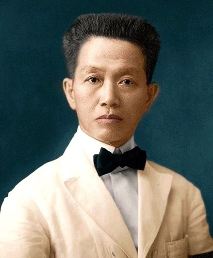
Emilio Aguinaldo - On March 22, 1869, in Kawit, Cavite, the Philippines, Emilio Aguinaldo was born. He brought about the Philippines' independence from Spain in 1898 and was chosen by the Malolos Congress as the nation's first president. Along with that, he led the Philippine-American War against American opposition to Philippine independence.
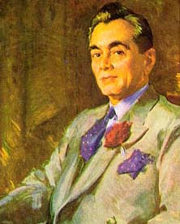
Manuel L. Quezon - After Emilio Aguinaldo (1899–1901), whom Quezon beat in the 1935 presidential election, he is regarded as the second president of the Philippines. He was the first Filipino to lead a government of the entire Philippines.
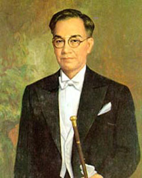
José Paciano Laurel y García - was a Filipino politician, attorney, and judge who presided over the puppet Second Philippine Republic under Japanese occupation from 1943 to 1945.
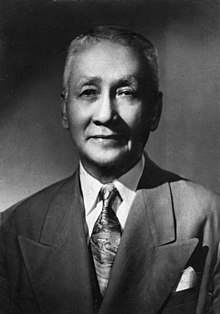
Sergio Osmeña Sr - as a politician and lawyer from the Philippines who presided over the Philippines from 1944 to 1946. Manuel L. Quezon's vice president appointed him. Osmea succeeded Quezon after his sudden death in 1944 at the age of 65, making him the oldest president of the Philippines until Rodrigo Duterte assumed office in 2016 at the age of 71.
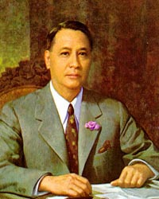
Manuel Acuña Roxas - was a Filipino politician and lawyer who presided over the Philippines from 1946 until his death in 1948. He was the country's fifth president. He was the third and final president of the Commonwealth of the Philippines from May 28, 1946, to July 4, 1946. After the United States relinquished control of the Philippines, he was elected as the first leader of the Third Philippine Republic, an independent nation.
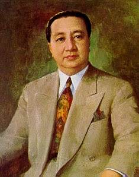
Elpidio Rivera Quirino - was a politician and lawyer from the Philippines who presided over the country as its sixth leader from 1948 until 1953. Quirino, a lawyer by trade, joined politics when he was elected to represent Ilocos Sur from 1919 until 1925. From 1925 to 1935, he was then elected to serve as a senator. He joined the Philippine Independence Commission, which was sent to Washington, D.C., in 1934.
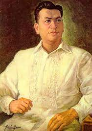
Ramon del Fierro Magsaysay Sr. - was a statesman from the Philippines who presided over the country as its seventh president from December 30, 1953, until his death in an airplane accident on March 17, 1957.
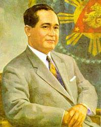
Carlos Polestico Garcia - was the eighth president of the Philippines and a Filipino teacher, poet, orator, lawyer, public servant, political economist, guerilla and Commonwealth military officer. Garcia, a lawyer by trade, entered politics when he was elected to represent Bohol's third congressional district. He then served from 1945 until 1953 as a senator.
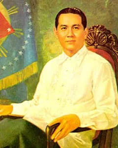
Diosdado Pangan Macapagal Sr. - was a Filipino lawyer, poet, and politician who held the offices of sixth vice president (1957–1961) and ninth president (1961–1955) of the Philippines. He oversaw the 1970 Constitutional Convention while still serving as a representative in the House of Representatives. Gloria Macapagal Arroyo, who served as president of the Philippines from 2001 to 2010, is his daughter.
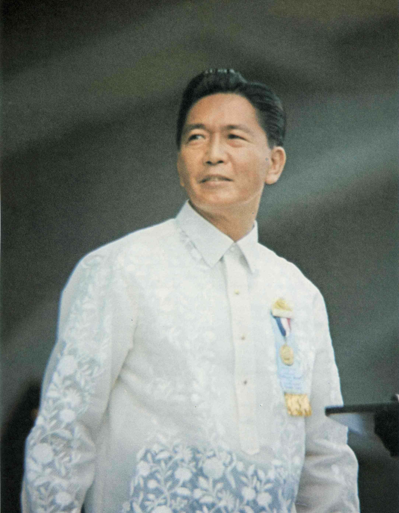
Ferdinand Emmanuel Edralin Marcos Sr - was a Filipino politician, attorney, kleptocrat, and tyrant who served as the country's 10th president from 1965 to 1986. He controlled the country during a period of martial law from 1972 to 1981, and he continued to exercise most of these powers until his overthrow in 1986, referring to his rule as "constitutional authoritarianism" 414 under the banner of his Kilusang Bagong Lipunan movement.
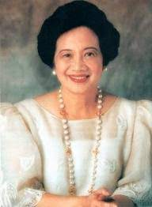
Maria Corazon "Cory" Sumulong Cojuangco-Aquino - was a politician from the Philippines who presided over the Philippines from 1986 until 1992. She was the most well-known participant in the 1986 People Power Revolution, which brought an end to President Ferdinand Marcos' two-decade tyranny and ushered in the Fifth Philippine Republic, a democracy, today.
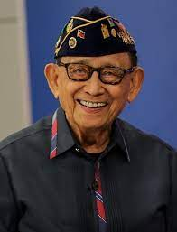
Fidel Valdez Ramos - was a politician and general from the Philippines who presided over the country for 12 years, from 1992 to 1998. He was the only military career officer to formally attain the rank of five-star general or admiral.
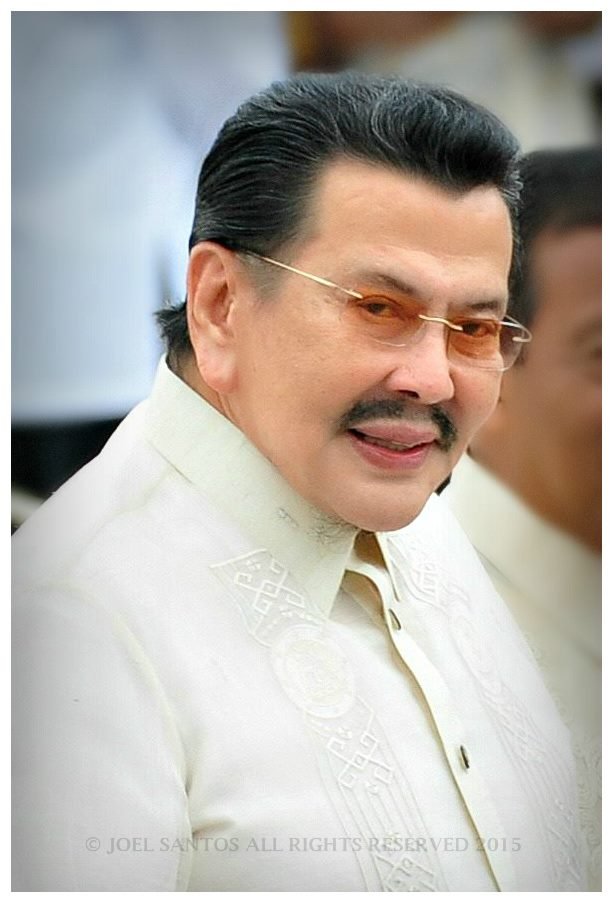
Joseph Ejercito Estrada - Former Philippine actor and politician, he served as the 9th vice president, 26th mayor of Manila, and 13th president. Impeached in 2001, he retired, becoming the first Asian head of state.
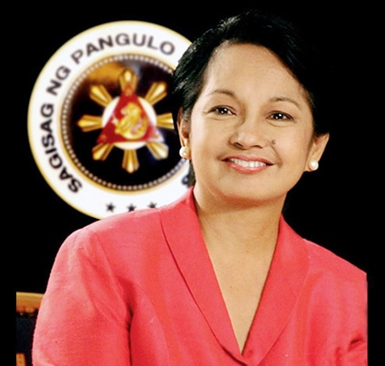
Maria Gloria Macaraeg Macapagal Arroyo - is a Filipino politician and professor who formerly presided over the Philippines as its 14th president from 2001 to 2010. She has been the Deputy Speaker of the Congress since 2022. Since Ferdinand Marcos, she has led the Philippines for the longest.
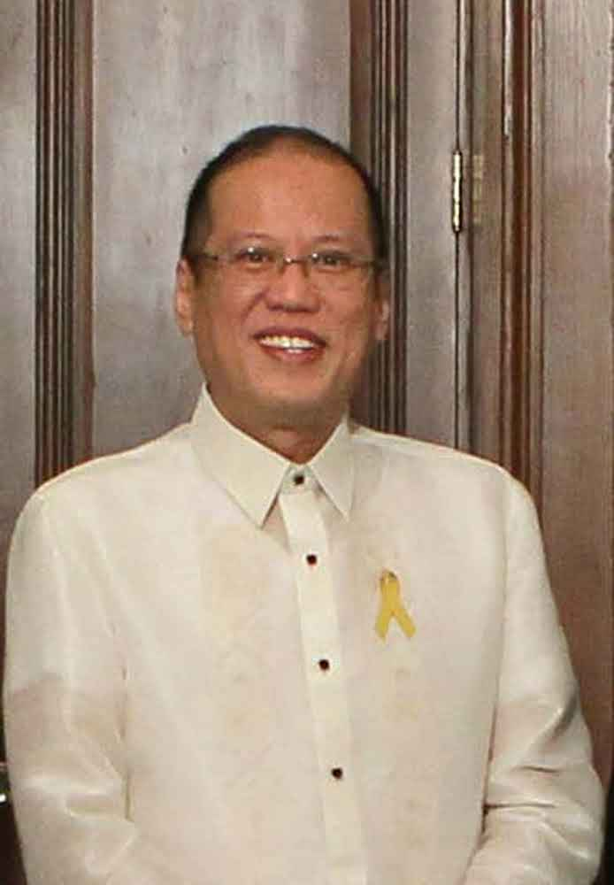
Benigno Simeon Cojuangco Aquino III - was a fourth-generation politician from the Aquino family of Tarlac and the 15th president of the Philippines from 2010 to 2016. He was the son of slain politician Benigno Aquino Jr. and 11th president Corazon Aquino.
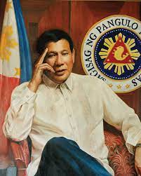
Rodrigo Roa Duterte - is a politician and lawyer from the Philippines who presided over the country as its 16th president from 2016 to 2022. He is the leader of PDP-Laban, the party in power in the Philippines during his administration. Duterte took office at age 71, making him the oldest president in Philippine history and the first person from Mindanao to hold the position.

Ferdinand "Bongbong" Romualdez Marcos Jr. - is a Filipino politician who now serves as the 17th president of the Philippines. Marcos also holds the position of secretary of agriculture. He was a senator before, from 2010 to 2016. He is the only son and only child of former first lady Imelda Romualdez Marcos and kleptocrat and dictator Ferdinand Marcos Sr., who served as the country's tenth president.